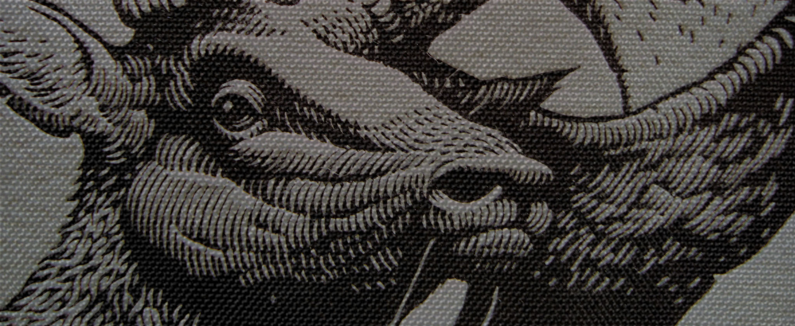

Aaron Horkey was birthed and reared in Windom, Minnesota, in the heart of the Rural Midwest. Key personality traits include debilitating social ineptitude and a perverse attention to detail. Enjoys desolation, megafauna and transplanting sumacs.
Currently ensconced in a bucolic whistlestop just west of the Mississippi, he whiles away the hours staring at his chore list and cultivating ulcers. He is the sole survivor of the Black Osprey Dead Arts Society and founding member of the Cottonwood County Druids Skateboard Gang.